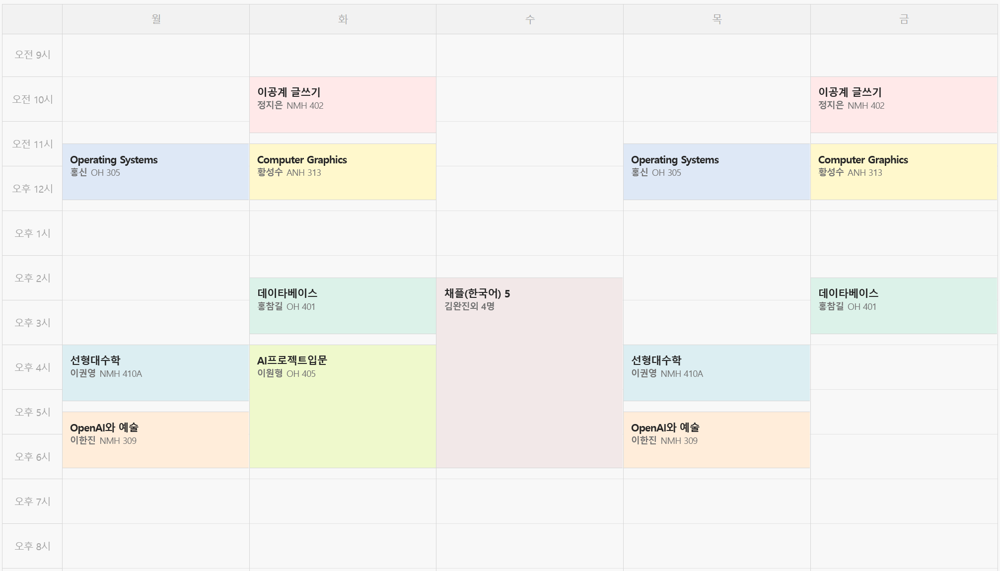
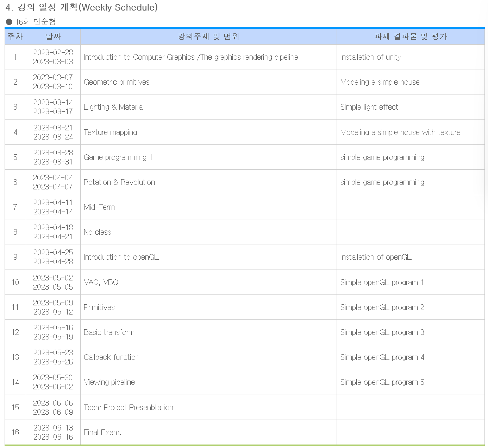

Introduction


OpenAI and Art
Introduction
Handong Universe
Introduction to Artificial Inteligence Project
Introduction
HW1
Investors are going nuts for ChatGPT-ish artificial intelligence
출처 링크:
- https://www.economist.com/business/2023/02/28/investors-are-going-nuts-for-chatgpt-ish-artificial-intelligence
소스의 날짜:
- 2023-02-28
간단한 요약:
- 생성AI는 현재 세상의 많은 사람들과 특히 투자자들의 주목을 받고 있다
- 500개 이상의 생성AI 스타트업이 생겨났다
- 생성AI 분야에서 장기적으로 모든 것을 가져갈 승자는 누가 될지 확실하지 않다
- 많은 스타트업들이 비슷하거나 더 나은 서비스를 제공하기도 하며 자원 소모가 심한 만큼 오픈소스 프로젝트에게 따라잡힐 수도 있다
- 저작권 침해와 같은 법적인 문제가 언제든지 터질 수 있다
- OpenAI는 GPT-4의 출시를 준비중
- 현 상황에서 가장 안전한 투자는 이러한 생성AI가 돌아가는데 필요한 프로세스 칩의 공급회사에 투자하는 것이다
- Cloud-computing services, data-center landlords, Nvidia같은 chip designer들은 앞으로 잘 될 수 밖에 없다
What impact will artificial intelligence have on education?
출처 링크:
- https://www.equaltimes.org/what-impact-will-artificial
소스의 날짜:
- 2023-03-03
간단한 요약:
- 요즘 AI가 생성하는 것들은 너무나 설득력이 있어 마치 AI가 사람과 같은 지능을 가지고 있고 이해하는 것 처럼 보이지만 절대 그렇지 않다
- 최근 AI가 대중에게 공개되어 수십만명의 사람들과 상호작용하며 '학습'하고 있다
- ChatGPT가 생성하는 문장들은 참이든지 거짓이든지 말이 되는 것처럼 결과를 생성하기 때문에 잘못 되었다 - Noam Chomsky
- ChatGPT는 좋은 책으로 공부하는 것보다 더 낫지 않다 - José F. Morales
- ChatGPT가 위험한 것은 절반은 참인 말을 절반을 거짓인 말을 모두 동일하게 설득력 있게 제공한다는 것이다
- 이해하지 못하고 말을 내뱉는 앵무새와 같이 단순한 "창의적인 도구"이다
- AI가 생성한 결과를 근거로 중요한 결정을 내리는 것은 위험하다
- AI가 하는건 감춰진 표절 "cloaked plagiarism" 이다
- Copy자체는 배우는 과정의 필수적인 요소이지만 어디서 가져왔는지 밝히지 않는 것은 잘못된 것이다
- 아직까지는 책이 훨씬 더 신뢰할 수 있는 소스이다
- AI는 학습을 처음부터 다시 시작하지 않고서는 한번 배운 것을 잊어버릴 수 없기 때문에 현재 대중적인 AI를 학습 시키는 기업들이 가르치는 한정된 정보들이 "valid and accurate knowledge"로 인식되어질 수 있다는 점
- 소셜 미디아에서 일어났던 것과 같은 실수를 반복하지 않으려면 개인이 원하는 정보로 training을 시킬 수 있을 때 까지 우리의 지식 관리를 AI에게 맡기면 안된다
- "패닉할 필요는 없지만 변화 할 필요는 있다" - Rose Luckin
- 단순히 사실을 외우고 그것을 기억해 내고 재현하는 것을 가르치는 것은 학생들의 미래에 적합한 인재가 되도록 하는 것이 아니다.
- 학생들이 스스로 "learner"으로 인식하도록 하고 어떤 정보가 어디에서 왔고 어떤 근거로 정보를 믿을지 잘 결정 할 수 있도록 가르쳐야 한다
- ChatGPT는 매우 빠르게 우리 삶의 일부로 자리 잡을 것이고 사람들은 그것을 잘 활용할 수 있도록 준비되어야 한다
- 우리의 결정 권한을 AI에게 넘겨주는 것은 정말 위험하다
- 아직 세상은 이 기술을 가지고 어떻게 뭘 해야 하는지 찾아가는 중이다
- 이 기술은 이제 감추려고 해도 감춰지지 않을 것이다 (학교에서 밴 하려고 해도 막을 수 없다)
- 21세기에 가져야 할 가장 중요한 능력 중 하나는 우리 주변의 모든 기술들과 함께 하면서도 안전하고, 책임감 있고, 건강하게 살아가는 것이다
Python Basics
Data-Base

- 중간고사 까지는 SQL 쿼리문만 잘 작성할 수 있으면 된다..?
Introduction
Chapter 1 - Introduction
DBMS - Database-management system
- collection of interrelated data and a set of programs to access those data
- primary goal:
- convenient and efficient way to store and retrieve db info
Database-System Applications
- DB systems are used to manage collection of data that:
- valuable
- large
- accessed my multiple users at the same time
- Key to managing complexity is abstraction
- users and application programmers does not need to know underlying details of how the data is actually stored
- There are 2 modes in which DBs are used:
- to support online transaction processing
- to support data analytics
Purpose of Database System
- Major disadvantage of using typical file-processing system (suported by the OS)
- Data redundancy and inconsistency
- Difficulty in accessing data
- Data isolation
- Integrity problems
- Atomicity problems
- Concurrent-access anomalies
- Security problems
- DB systems offer solution for all these problems
View of Data
-
What is DB
- "A collection of interrelated data and a set of progrmas that allows users to access and modify these data"
- provides abstract view of the data
-
4 Categories of Data Models
- Relational Model
- Entity-Relationship Model
- Semi-structured Data Model
- Object-Based Data Model
Data Abstraction
- Physical level
- lowest level of abstraction
- describes how the data are actually stored
- Logical level
- describes what data are stored
- relationships among those data
- describe the entire DB in terms of a small number of relatively simple structures
- does not need to know the complex physical-level structures -> physical data independence
- each record is described by a type definition
- interrelationship of these record types is also defined at this level
- View level
- describes only part of the entire DB
- hides logical level details
- security -> only allows access to certain parts
- simplifies interactoin with the system
- several views are defiend
- describes only part of the entire DB
-
DB programmers != DB Administrators
- DB Admins may be aware of certain details of the physical organization of the data
- DB use data structure called an index to support efficient retrieval of records
-
These abstractions not only hide low level implementations from the users, but also the application program developers
-
instance: The collection of information stored in the DB at a particular moment
-
schema: The overall design of the DB
-
DB systems have several schemas for each level of abstraction
- Physical schema
- describes the DB design at the physical level
- can be changed without affecting application program
- Logical schema
- View schema (aka subschemas)
- Physical schema
-
Good and bad schema designs ? (ch 7)
Database Languages
-
DDL(data-definition language)
- specify the DB schema
- special type of DDL -> data storage and definition language
- used to specify the storage sturcture and access methods
- DDL provides facilities to specify constraints
- Domain Constraints
- domain of possible values
- Referential Integrity
- Authorization
- read, insert, update, delete
- Domain Constraints
- DDL -> output
- "The output of the DDL is placed in the data dictionary, which contains metadata - that is data about data"
-
DML(data-manipulation language)
- express DB quereis and updates
- 2 types:
- Procedural DMLs
- Declarative DMLs (nonprocedural DMLs)
- query is a statement requesting the retrieval of information
-
SQL language -> nonprocedural (Declarative)
- a query takes as input several tables and always returns a single table
-
ODBC (Open Database Connectivity)
- defines appolication program interfaces for use with several programming language
- JDBC (Java Database Connectivity)
Database Design
- Initial Phase
- characterize fuly the data needs of the prospective DB users
- Conceptual-design phase
- choosese a data model and translates into a conceptual shcema of the DB
- Logical design phase
- moving from the abstract data model to the implementation of the DB
- Physical design phase
- physical features of the db are specified
- for of file organization and the internal storage structure
DB Engine
- The functional components of a db system can be broadly divided into:
- storage manager
- manage how information stored on disks as low-level data
- how they move between disk storage and main memory
- use the file system to store data
- translates DML statements into low-level file-system commands
- Components
- Authorization and integrity manager
- Transaction manager ?
- File manager
- Buffer manager
- Data structures it implements
- Data files
- Data dictionary
- Indicies
- manage how information stored on disks as low-level data
- query processor
- translates query language from logical level to sequence of operations at the physical level
- components
- DDL interpreter
- DML compiler
- performs query optimization
- Query evaluation engine
- transaction management
- treat a sequence of db accesses atomically
- happen in its entirety or not at all
- all-or-none requirement -> atomicity
- correctness requirement -> consistency
- persistence requirement -> durability
- allows devs to think at a higher level
- transaction -> a collection of operations that performs a single logical function in a db application
- each transaction is a unhit of both atomicity and consistency
- components
- recovery manager
- concurrency-control manager
- treat a sequence of db accesses atomically
- storage manager
Database and Application Architecture

two-teir and three-tier architecture

- Rather than distributing the business logic of the application to all clients, it is better to embed in the application server only.
- three-teir architecuter provides better security as well as performance
History of DB systems
- 1950s
- magnetic tapes
- data could be only read sequentially
- 1960s
- hard disks cam out
- allowed direct access to data -> free from sequentiality
- 1970s~1980s
- Initially existing network and hierarchial DB was much better
- System R -> efficient relational DB system
- Soon Ingres, Oracle, DB2, etc... came out
- In 1980s relational model almost replaced the existing network and heirarchial DB model
- 1990s
- SQL language was designed -> to support query intensive applications
- until 1980s, applications were mostly update-intensive
- WWW came out
- 2000s
- semi-structured data
- XML, JSON
- added support for spatial data (location)
- social network -> graph DB
- need for rapid development -> NoSQL systems
- semi-structured data
- 2010s
- NoSQL systems evolved to provide features to support stricter notions of consistency
- Enterprise started outsorcing data storage and management
- cloud services
- "software as a service"
Week 2
Relation Algebra
-
Select σ
-
Project Π
-
Cartesian product ⨉
-
Join ⋈
-
Rename ρ
-
Union ⋃
-
Set-intersection ⋂
-
Set-difference −
-
Operands: variables or values from which new values can be constructed
-
Operators: symbols denoting procedures that construct new values from given operands
-
What is relation algebra?
- A procedural language consisting of a set of operations that take 1 or 2 relations as input and produce a new relation as their output
Select Operation
- The select operation selects tuples that satisfy a given predicate
- Notation: $\sigma_{\rho}(r)$
- is called the selection predicate
- Example:
- "select those tuples of the instructor relation where the instructor is in the Comp. Sci department"
- Query: $\sigma_{dept_name="Comp. Sci."}(instructor)$
- Comparison using $=, \ne, >, \ge, <, \le $ are allowed in the selection predicates
- Combine several predicates into a larger predicate by using the connectives: $\land$(and), $\lor$(or), $\lnot$(not)
- "select those tuples of the instructor relation where the instructor is in the Comp. Sci department"
Project Operation
- A unary operation that returns its argument relation, with certain attributes left out
- Notation $\Pi_{A_1,A_2,A_3,...,A_k}(r)$
- $A_1,A_2,A_3,...,A_k$ are attribute names and $r$ is a relation name
- The result is defined as a relation with k columns
- Columns that are not listed among $A_1,A_2,A_3,...,A_k$ are also removed in the result
- Duplicate rows are removed from the result (because the resulting relations are sets)
- Example
- "Show only the name and salary of instructor"
- Query
- $\Pi_{name, salary}(instructor)$
Compositoin of relational operations
- relational-algebra operations can be composed together into relational-algebra expression
- recall that the result of a relational-algebra is a relation
- Instead of giving the name of a relation as the argument of the projection operation, one can give an expression that evaluates to a relation
- Consider the query
- "Find the names of all instructors in the Comp. Sci. deparment"
- Query
- $\Pi_{name}\Bigl( \sigma_{dept_name="Comp. Sci."}(instructor)\Bigr)$
Cartesian-Product Operation
- The Cartesian-product operation (denoted by $\times$) combines information from any 2 relations
- Construct a relation of the result out of each possible pair of tuples
- Binary operator
- Example
- "The Cartesian product of the relations instructor and teaches"
- Query
- $instructor \times teaches$
- The Cartesian-Product associates every tuple of instructor with every tuple of teaches
- most of the resulting rows have information not very meaningful
- Example
- "Get only those tuples of instructor $\times$ teaches that pertain to the courses that the instructor taught"
- Query
- $\sigma_{instructor.id=teaches.id}(instructor \times teaches)$
Join Operation
-
The join operation combines a select operaiton and a Cartesian-Product operation into a single operation
- Consider relations $r(R)$ and $s(S)$
- Let $\theta$ be a predicate on attributes in the schema $R \cup S$
- The join operation $r \bowtie_{\theta}s$ is defined as follows:
- $r\bowtie_{\theta}s = \sigma_{\theta}(r\times s)$
- Example
- $\sigma_{instructor.id=teaches.id}(instructor\times teaches)$ is equivalent to $instructor\bowtie_{instructor.id=teaches.id}teaches$
- Consider relations $r(R)$ and $s(S)$
-
나중에 SQL을 사용하면 아래와 같이 다양한 JOIN operation을 배우게 될 것이다
- INNER JOIN
- LEFT JOIN
- RIGHT JOIN
- OUTER JOIN
Union Operation
- The union operation combines 2 relations as a superset of both
- Notation: $r\cup s$
- For $r\cup s$ to be valid,
- $r, s$ must have the same number of attributes (same arity)
- The attribute domains must be compatible
- Example
- "Find all coursese taught in the Fall 2017 semester, or in the Spring 2018 semester, or both"
- Query
- $\Pi_{corse_id}\Bigl(\sigma_{semester="Fall"\land year=2017}(teaches)\Bigr) \cup \\Pi_{corse_id}\Bigl(\sigma_{semester="Spring"\land year=2018}(teaches)\Bigr) $
- Duplicates are removed!
Set-Intersection Operation
- The set-intersection operation finds tupes that are in both the input relations
- Notation: $r\cap s$
- Assumptions:
- $r, s$ have the same arity
- Attributes of $r$ and $s$ are compatible
- Example
- "Find the set of all courses taught in both the 2017-Fall and 2018-Spring semesters"
- Query
- $\Pi_{course_id}\Bigl(\sigma_{semester="Fall", \land , year=2017}(section)\Bigr)\cap \ \Pi_{course_id}\Bigl(\sigma_{semester="Spring", \land , year=2017}(section)\Bigr)$
Set-Difference Operation
- The set-difference operation finds tuples that are in one relation but are not in another
- Notation: $r-s$
- Assumptions
- same arity
- compatibility
The Assignment Operation
- It is convenient at times to write a relational-algebra expression by assigning parts of it to temporary relation variables
- Notation: $\leftarrow$
- An assignment works like the assignments in a programming language
- Example
- Find all instructor in the Physics and Music departments
- Query
- $Physics \leftarrow \sigma_{dept_name="Physics"(instructor)}$ $Music \leftarrow \sigma_{dept_name="Music"(instructor)}$ $Physics \cup Music$
- 프로그램 코드와 같이 위에서 아래로 읽는다 -> sequential code를 짤 수 있다
- With the assignment operation, a query can be written as a sequential program
- A sequential program consists of a series of assignments followed by an expression whose value is displayed as the result of the query
Rename Operation
- The results of relational-algebra expressions do not have a name that one can use to refer to them
- The rename operator, $\rho$, sets names to relational-algebra expressions
- Notation: $\rho_x(E)$
- Returns the result of expression $E$ under the name $x$
- $E$ can be specific attribute of a relation
Equivalent Queries
-
There is more than one way to write a query in relational algebra
-
Example
- "Find information about courses taught by instructors in the Comp. Sci. department with salary greater than 50,000"
- Query 1
- $\sigma_{dept_name="Comp.Sci", \land , salary>50,000}(instructor)$
- $\sigma_{dept_name="Comp.Sci"}\Bigl( \sigma_{salary>50,000}(instructor)\Bigr)$
- \( \sigma_{salary>50,000}\Bigl( \sigma_{dept_name="Comp.Sci"}(instructor)\Bigr) \)
- The 3 queries are not identical; they are, however, equivalent -- they give the same result on any database
-
쿼리를 어떻게 짜느냐에 따라서 실행 속도가 달라진다
- 예를들어 위에 예시에서 1번보다 2번이 더 빠를 것을 예상할 수 있다. 더 적은 comparison을 사용하기 때문에
- 요즘 DBMS는 SQL 쿼리를 받은 그대로 실행하지 않고 Query Optimization을 한다
- 프로젝트 할 때 Query Optimization이 필요할 수 있다
Week 3
MySQL
-
An SQL-based R-DBMS (relational database management system)
-
Free and open-source R-DBMS (under GPL)
- Owned by Oracle
- Commercial version of MySQL is also provided (including technical support)
- "My" came from the name of co-founder Michael Widenius' daughter
- C.f, MariaDB
-
Compatible with standard SQL (almost)
-
Frequently used for commercial web services
- Enlyft라는 회사가 주기적으로 MySQL 사용량 데이터를 분석한다
-
MySQL은 시작할 때 돈은 안들지만 유지보수나 문제가 생겼을 때 많이 손해/비용이 발생한다
-
Why MySQL?
- Popular
- Active discussions all over the Internet
- Versatile: runs on Linux, Windows, Mac OS X, Solaris, FreeBSD, ...
- FreeBSD -> -> MacOS
- Supports wide range of programming languages (C/C++, Java, Python, .Net, ...)
- Connector가 존재한다
- Cost starts from 0
- 하지만 이후 유지보수 비용, 시작 비용, 관리 비용도 생각해야 한다
- High performance (fast and reliable)
- Popular
-
다양한 DBMS
- Disk | File System | Database System
- Disk는 느리다..
- DB 전체를 Memory에 올리면 안되나?
- -> In-memory DB
- access가 많고 적은 양의 데이타
- Redis
- Elasticsearch
- Reverse Index를 만들어 준다
- Google과 같은 검색엔진을 만들기 쉽다
- 조직 내에서 검색엔진을 만들어야 할 때
- SQLite
- DB끼리 데이터를 옮기려면 DBMS에서 제공하는 interface를 사용해야만 한다
- 그냥 복사->붙여넣기 한다고 해서 DBMS가 인식하지 않는다
- 하지만 SQLite는 복사 붙여넣기 해도 된다
- File-based
- Microsoft Azure SQL Database
- MSSQL on Cloud
- Snowflake
- Data warehouse를 구축할 수 있게 도와줌
- 분석을 목적으로 한다 (Analysis)
- Analytic <-> Transactional
- Disk | File System | Database System
-
MySQL
- Massive: Can handle TB of data
- Convenient: Supports high-level query language
- Multi-user: Supports concurrent data access
- Safe: Supports transaction
- In R-DB, transaction is the unit of operation/task
- atomicity
- eg. (1)돈을 빼고 (2)이동하고 (3)돈을 더하고
- 1,2,3 전부 다 실행이 되거나
- 전부 실행이 안되거나 해야한다
- In R-DB, transaction is the unit of operation/task
- Efficient: Can handle thousands of queries/second
- TPS -> transactions per second
- R-DBMS에서는 성능이 상당히 중요하다
- Reliable: 99.99% up-time in many real-world products
- Question: Up-time을 유지하기 위해서는 어떤 문제들이 존재하고 이를 해결하기 위해서는 어떤 기술들이 필요한가?
- 문제: 버그 생겨서 crash
- Question: Up-time을 유지하기 위해서는 어떤 문제들이 존재하고 이를 해결하기 위해서는 어떤 기술들이 필요한가?
-
MySQL Versions
- Version 5.x vs Version 8.0
- 5.x
- Most popular version of MySQL
- More stable and conventional
- 5.x 버전일 때 Oracle이 인수했다
- 8.0
- Current version
- Provides up-to-date DB functionalities
- better storage engine, faster, more secure
- 아직까지는 5.x 버전을 사용하고 있다
- Upgrading a DBMS is NOT easy
- 업그레이드 과정에서 데이터 손실은 매우 흔한 문제이다
- why???
- 업그레이드 과정에서 데이터 손실은 매우 흔한 문제이다
-
Where to get MySQL?
-
DBMS는 기본적으로 상시 작동한다
-
우리 수업에서는 Docker를 사용해서 DBMS를 실행 할 것이다
-
We have prepared a Docker image for the course
- Consists of ubuntu Server, MySQL, example databases for course activities
-
DB Client Software
Engineering Writing - 이공계 글쓰기
강의 계획서

관련 사이트 모음
Introduction
글쓰기가 필요한 이유
- 논문 써야됨, 소통 해야됨, 많은 엔지니어와 비즈니스 사람들이 정말 필요한 기술이라고 설문
이공계서 접하는 글의 종류
- 논문, 발표 대본, 실험 보고서, 강의 노트,
글쓰기가 어려운 이유 / 어려운 점
- 많이 안써봐서, 시작 문구 작성하기, 등등
Week 2
비평문 6팀:
- 권은혁(21900050)
- 최예라(22200750)
비평문?
- 평가하는 글
과학 비평문 (Scientific Critique)
- 평론 -> 평가 대상의 가치를 매김
- 본인의 시각에서 객관적으로 평가 (evaluate)
- Q 본인의 시각이면서 객관적이다.. ?
- 궁극적 목표
- 현재의 지식체계와 사회를 발전시키는 기여도를 기준으로 평가
- 쉽게 써서 대중들에게 효과적으로 전달
과학 비평문의 종류
- 수필적
- 전체 내용 보다는 1,2가지 중점되는 소재나 주제
- 자유롭다 -> 주관적 견해 포함
- 대중에게 전달 목적
- 논증적
- 전체적으로 분석함으로 가치나 한계를 종합적으로 지적
- 논거를 제시해 가면서
- '머리말-본문-맺음말'의 형태
- 객관성 확보
준비
- "비평하고자 하는 과학 분야의 정보를 가능한 많이 수집"
- "비평을 할 과학적 대상이 주어지면, 먼저 그 대상을 자세히 분석하여 무엇이 중요하나지를 파악하고, 그 가운데 구체적으로 어떤 것을 비평 대상으로 삼을 것인지를 정해야 한다"
- "수강을 하고 있는 특정 교과목에서 비평과제를 부여하면서그에 대한 비평 지침을 미리 알려 주는 경우에는 이 비평 지침을 염두에 두고 비평 대상물을 분석해야 한다"
- "비평 대상이 되는 책이나 자료를 읽을 때는 적절하게 메모를 하는 것이 필요하다"
과정
- "창조적이고 비판적으로 자료를 읽고 분석하기"
- 핵심적인 주장 찾기
- 뒷받침 하는 증거의 설득력
- 내용 연결성
- 오류
- 육하원칙 질문하면서 분석 (Who, When, Where, What, hoW, Why)
- "필자가 주장하는 바를 뒷받침하는 데이터나 사실을 확인해 보기"
- "데이터와 자료의 내용을 요약하고 메모하기"
- "비평 대상의 가치를 평가하기"
- 이론적이고 객관적인 자료에 근거해서 가치가 있는지 없는지 평가
- Q: 어떤 가치? 어떤 관점으로서의 가치를 말하는 것인가?
- "비평문을 작성하기 위한 기획서 만들기"
- ~설계도
- 기획서에 들어갈 요소들:
- "비평문을 쓰기 위한 대상 선정"
- "비평문의 주제 및 개요 작성"
- "비평문 쓰기를 위한 자료의 수집"
- "자료의 분석 및 비평"
- "비평문의 프레임(frame) 만들기"
- 논리 개요도
- 서론-본론-결론
- 논리 개요도
- 초안(first draft) 쓰기
- 교정하기
- 내용면에서의 교정
- 구성면에서의 교정
- 표현면에서의 교정
비평문의 일반적 형식과 내용
들머리 (Introduction)
본문 (Main body)
마무리 (Conclusion)
3/7 (Tue)

-
글쓰기 배우기 가장 좋은 방법은 -> 1:1 첨삭
-
쓰기의 개념과 범위
- 문자 언어의 특성 (음성 언어와의 차이)
- 영구성, 산출시간, 거리, 철자, 복잡성, 어휘, 형식성
- 문자 언어의 특성 (음성 언어와의 차이)
-
쓰기의 범위
- 잘하기 위해 필요한 능력
- 쓰기 지식: 언어, 주제, 독자 (AppleBee)
- Canale: 문법, 사회언어학 (사회적 위치), 담화적, 전략적 (이어나가는 전략)
- Tribble: 내용, 맥학, 언어 구조, 쓰기 과정
- 잘하기 위해 필요한 능력
-
좋은 글이란
- 진실성, 독창성, 명확성
-
자기 표절 (self-plagiarism) by ChatGPT
- 이미 출판된 자신의 논문이나 연구 보고서 등에서 발표한 내용을 다시 사용하는 것
- 동일한 내용을 2번 이상 사용하여 출판하거나 발표하는 것
- 학술 연구에서는 용인되지 않는다
- 중복 발표하여 독자나 평가자를 속이는 것으로 간주
- 연구의 발전을 방해 (?)
- 사용하기 위해서는 출처를 명확하게 밝혀야 함
질문
- 비평문을 비평 (?)
3/10 (Fri)

Lecture Note 요약
-
화제 vs 주제
- 화제 -> 이야기 거리
- 주제 -> 글을 쓰는 사람이 말하고 싶은 바
- Example
- "비혼모" = 화제
- "비혼모는 좋다" = 주제
-
문단을 구분하는 이유
- 문단마다 하고 싶은 이야기 한개 -> 소주제
- 너무 길면 안좋다
-
비평적 글쓰기
- 문제 분석 -> 해결 방식 제안하는 식으로 쓸 수도 있다
-
서론과 제목은 마지막에 쓰는 것이 좋다
-
논리 개요도
- 서론
- 본론
- 결론
-
강의 책의 Chapter 15읽어보기
Chapter 15 - 과학 에세이 쓰기 전략
-
과학 에세이 (Scientific essay) = 과학적 내용을 에세이 형식으로 쓴 글
-
과학적 사실을 대중에게 알리고 공감대를 형성하는 목적
-
주제 정하기
- 가치의 문제
- 독자의 흥미
- 사회발전에 도움이 될 만한 것
- 내용의 문제
- 주제에 대해 새롭고 분명한 식견을 가지기
- 정확하고 새로운 자료
- 창의적 해결책
- 구체화의 문제
- 글의 분량
- 내용을 구체적이고 자세하게 쓸 수 있도록 주제를 좁혀서 잡기
- 가치의 문제
-
생각을 정리하고 자료 모으기
- 내용 만들기
- 관찰하고 분석한 내용을 바탕으로 넣을 내용을 생각대로 써 보는것
- 순서에 상관하지 않고 적기
- 각 내용마다 기호로 표시 (eg. (1), (2), ...)
- 논리 개요도를 작성하는데 도움
- 적절한 예가 있으면 같이 쓰기
- 근거가 불확실한 것은 '?' 표시하기
- 제재 -> 에세이를 쓰는 데 필요한 자료
- 사건, 사실, 물건, 실례, 통계자료
- 전문가들의 견해
- 제재 선정
- 주제를 뒷받침
- 풍부하고 다양하고 새로운 것
- 출처가 분명
- 독자들의 관심을 끌 수 있는 것
- 사실과 견해를 구분
- 내용 만들기
-
논리 개요도 작성하기
- 3단 구성
- 서론-본론-결론
- 4단 구성
- 기 승 전 결
- 5단 구성
- 문제제기 - 자신의 견해 - 반대 견해 - 반대 견해 논박 - 마무리
- 개요도를 작성할 때 유의할 점
- 소주제를 중심으로 노리 정연하게 작성
- 논증의 요점이 잘 드러나도록
- 소주제와 제재가 잘 호응이 되도록
- 논리 개요도만 보아도 글의 전체 내용을 짐작할 수 있을 정도로
- 3단 구성
-
초안 작성하기
- 논리 개요도를 바탕으로 쓰기
- 그렇지만 너무 얽매일 필요는 없다
- 유의할 점
- 컴퓨터로 작성
- 자세하고 구체적으로
- 앞 문장 혹을 앞 단락의 말꼬리를 놓치지 않도록 (자연스럽게)
- 종합적으로 생각하면서
- 보충할 부분은 표시하면서
- 표준국어대사전 이용
- 예정된 분량보다 좀 더 길게
- 잘 안풀리면 조금 쉬었다가, 자리는 멀리 떠나지 않는다
- 종결어미
- 평서형, 의문형, 명령형, 청유형, 감탄형
- 비유법
- 직유법, 은유법, 풍유법, 의인법, 대유법
- 강조법
- 영탄법, 열거법, 점층법, 대조법, 강조법
- 변화법
- 도치법, 설의법, 대구법, 문답법, 반어법, 인용법
- 정의, 예시, 비교, 대조, 일반화, 묘사, 분류, 분석, 등의 다양한 방법 쓰기
-
들머리 잘 쓰는 법
- 글의 화제(Topic)을 미리 밝힘
- 글의 소재나 사건을 제시함
- 핵심용어나 낱말의 뜻을 규정함
- 화제가 되고 있는 말이나 일화를 소개함
- 글의 주제와 관련된 내용을 직접 제시함
-
본문 쓰기를 잘하는 법
- 주제에 초점이 맞도록 해야 한다
- 화제의 내용과 범위에 맞도록 해야 한다
- 분량 보다는 안목과 깊은 통찰력이 더 중요하다
- 단락 전개가 긴밀하게 되도록 해야 한다
- 새로운 인식에 따른 독창성 있는 내용을 담도록 해야 한다
- 그의 갈래에 따른 자연스러운 단락 전개가 되도록 해야 한다
- 글의 형식이 다양하고 리듬감이 있도록 해야 한다
-
마무리 쓰기를 잘하는 법
- 본문 내용을 보충함으로써 마무리하기
- 본문을 요약하믕로써 마무리하기
- 제언이나 전망을 덧붙임으로써 마무리하기
-
교정하기 -내용면, 구성면, 표현면으로 나누어 교정하고, 시간 간격을 두고서 해야 편견에서 벗어날 수 있다
- 내용면
- 주제의 선명성
- 글 전체 내용의 통일성
- 제재의 타당성
- 내용의 창의성
- 구성면
- 단락 나누기
- 단락이 소 주제문을 중심으로 잘 나누어져 있는지
- 뒤받침 문장들이 역할을 잘 하는지
- 단락간의 연결
- 긴밀하고 자연스러운가?
- 긴밀하다?
- 동일어, 동의어, 지시어, 문장 접속어, 생략등의 단락을 엮어주는 요소
- 긴밀하고 자연스러운가?
- 단락 나누기
- 표현면
- 어휘사용의 적절성
- 문장의 정확성
- 표현의 다양성
- 문체의 적절성
- 맞춤법 규정 준수
- 내용면
-
제목 정하기
- 너무 기계적 -> 흥미를 떨어뜨림
- 너무 기교 부림 -> 글의 내용과 동 떨어짐
- 주제를 잘 드러낼 수 있는 창의성 있는 제목
- 제목은 글의 갈래에 따라 달라질 수 있다
- 논증문, 설득문, 비평문, 설명문과 같이 주장이나 설명을 목적으로 하는 글 -> 명시적인 제목
- 묘사문, 서사문과 같은 느낌이나 감동을 전달하는 것을 목적으로 하는 글 -> 암시적인 제목
- 암시적인 제목의 예시 by ChatGPT
- "끝없는 여정"
- "시간의 칼날"
- "길을 찾아서"
- "저승사자의 초대"
- "다시 돌아온 봄"
- 암시적인 제목의 예시 by ChatGPT
- 제목의 다양한 면
- 구조면 -> 단어 형태, 구절 형태, 문장 형태
- 내용면 -> 글의 주제나 목적과 관련된 형태, 글의 제재와 관련된 형태
- 표현면 -> 명시적인 형태, 암시적인 형태
그냥 새롭게 배운거
- 학술지 vs 논문
- Journal vs Paper
- 학술지는 "여러 학문 분야에서 연구자들이 발표한 원고들이 심사를 거쳐 게시되는 학술적인 저널입니다" - ChatGPT
- "논문은 이러한 학술지에 실리는 논문들을 일컫는 말로, 학술적인 연구 결과를 발표하고자 하는 글" - ChatGPT
- "학술지는 여러 분야의 연구자들이 각자의 연구를 발표하고, 논문은 그 중에서도 하나의 연구 결과를 구체적으로 설명하는 글" - ChatGPT
주말에 할 일
- 기말과제 예시 출력해서 읽어보기
- 팀으로 하는 비평문 후보 뽑아서 출력해서 읽어보기 & 팀원과 공유하기
Linear Algebra
Ch1 s1
Ch1 s2-3
Operating Systems
홍신 교수님
주교재 : Operating Systems: Three Easy Pieces
No NFC !
4~6 assignments
- week 1: Ch 1,2
- week 2: Ch 3, 4, 5
- week 3: Ch 6, 7, 8 ...
Introduction
What is Computer?
-
Computer vs Calculator
-
Fundamental contructing units of a computer
- CPU - memory
-
What is OS?
- "a body of software that enable various programs to run effectively and efficiently on computer with different hardware devices"
- suit of differnet kinds of program
- work as a platform for application program and hardware devices
- platform where various parts come to gether and communicate together... (???)
- means a suite of system programs which support construction and operation of application programs
-
Motivation
- sophiscated calculator?
- What is computer?
- Processor + Memory (Von Neumann)
- Memory is just a storage of array of bytes
- Processor -> PC
- What happens?
- processor "fetch" the code from memory
- "decode"
- execute
- store
- Constructing a software system by combining existing ones
- importing progrmas from other systems
- managing a diversity and variety of hardware devices
- providing interactive features in software system (eg. networking)
- to run things simultaneously the definition of computer was not enough (processor + memory)
- Problems
- portability issue (hardware-dependency)
- interoperatability issue
- scheduling issues
- reourse management issue (efficiency and scalability)
- safety & security issues
- some program could access some sensitive data on stored on my computer
-
Approach -> solution to addressed problems
- Virtualize a computer system
- provide a conistent and simple view to application and programmers (for portability)
- provide common interfaces for an application program to communicate with hardware units and other application programs (for interoperatability)
- distribute hardware resources to efficiently serve request from application programs (for concurrency, efficiency and scalability)
- forbid an application to access the critical control and internals of a computer system and the other programs (for safety and security)
- Divise different policies of coordinating application programs and then use a suitable one at a specific context
- Virtualize a computer system
-
Realizing those two concepts is the key to understanding of what is OS
-
Solution -> OS Kernel
- Have library programs that provide "helper" function with common interfaces to application programs
- for accessing HW components and for communicating with other programs
- Let these helper functions take th econtrol of and execution form its caller to do sensitive operations under protection from the caller application
- It's more like "officer" than just "helper"
- Extends a computer architecture to provide a special instruction to call these officer functions (requires HW support)
- system call
- When they work. officer functions not only serve request, but also regulate and manage the resources that the application uses, especiallly in consideration with other application programs in the system
- Then it's more like "governor" than "officer"
- Have library programs that provide "helper" function with common interfaces to application programs
-
Solution -> System Progrmas
- To make a human user and an application easily interact each other, there exists parts of operating systems running upon kernel called system programs
- e.g. compiler, linker, loader, shell, service daemons , ...
- To make a human user and an application easily interact each other, there exists parts of operating systems running upon kernel called system programs
-
Solution -> Abstraction
- 3 models
- Process
- an abstract object representing a running instance of a program and all resources that it uses
- Virtual memory
- an abstraction of memory locations (address space)
- File system
- an abstract object for communication channel (streams)
- to storage devices (i.e. permanent memory)
- to other programs
- to other systms via network
- an abstract object for communication channel (streams)
- Process
- 3 models
-
Concurrency
- each program making continuous progress
-
When program is running, memory translation is always happening
- by frame pointer (FP)
- and the FP is managed by the OS
Ch2 Introduction to Operating Systems
-
Running Program
- fetch - decode - execute -> repeat (Von Neumann model)
-
OS
- primary goal: make system easy to use
- method: virtualization
- virtualization
- OS referred to virtual machine
- physical resource -> virtual form
- OS exports few hundred system calls for application to use
- can also say that the OS provides a standard library to applications
- resource manager
- resource: CPU, memory, disk
-
CRUX OF THE PROBLEM
-
"how does the operating system virtualize resources?"
- OS implements mechanisms and policies
2.1 Virtualizing the CPU
- Creating an illusion that the system has a large number of virtual CPUs
-
run many programs at once -> virtualizing the CPU
-
how to decide which should run at specific time?
- policy
-
resource manager
-
2.2 Virtualizing Memory
- model of physical memory
- simply just an array of bytes
- virtualizing memory
- private virtual address space
2.3 Concurrency
- Problems that arise when working with many thigs at once
- OS, modern multi-threded programs
- Thread:
- function running within the same memory space as other functions
- more than one of them active at a time
- Q: What does it mean by active?
- CRUX OF THE PROBLEM
- "How can we use primitives and mechanisms to solve the problems of concurrency?"
- problems occur when reading file at the same time
- because load, update, write instructions are not executed atomically
2.4 Persistence
- DRAM is volatile
- I/O device
- hard drive, solid-state drives
- OS -> manage disk using program -> file system
- disk space is shared (not virtualized like CPU and memory)
- when creating and writing to file
- open(), write(), close(); these system calls are routed to file system which handles the request and return result
Process
3/9 (Thur)

Lecture Summary
- What kind of problems appear when sharing a computer?
- How to decide who should use the computer at a specific time
- How to manage time of sharing
- A process taking over entire space
- A process corrupting the entire system
- many other..
- OS is created to solve the problems that arise when sharing a common resource (CPU and memory)
Time Sharing
- Time Sharing is the concept that is used in OS to share resources among multiple processes
- It is divided into 2 smaller concepts
- Mechanism
- Policies
- It is divided into 2 smaller concepts
Notes from video
-
Process
- a running instance of a program
- program vs process
- static / dynamic
- a running instance of a program
-
Constitution of Program Execution Content
- What kind of information are needed to be stored to resume process after pausing?
- Memory states
- address space
- this just stays in the memory space
- CPU states
- this must be copied over to memory space to be safely stored
- registers: general-purpose and special-purpose
- cache: they are for performance of the CPU computation
- When doing timesharing, cache can not be utilized most efficiently
- performance of the cache will be degraded
- Recent computer architecture provide some functionality to utilize cache when performin context switching
- I/O information
- Above 3 informations are needed
- They are taken snapshot
-
Life Cycle of a Process
- Process creation
- resource allocation
- independent space: memory space,
- every process open some basic files (stdin, stdout, stderr) -> basic file resources
- under kernel, it manages some datastructure that manages currently running process. A new object must be created
- loading : brining binary code (program) to address space of process (from disk storage)
- eagle(?) (eagerly) manner
- lazy manner
-
Instead of taking the whole snapshot of the program, only part of it is taken snapshot
-
binary code
-
executable code
- initial part of the code
-
decode the metadata of the program allignment
- decode
- metadata
- program allignment
-
Questions: does the programmer have to provide the initial instruction that can be loaded in lazy manner?
-
- resource allocation
- Process creation
-
Process
- a running instance of an application program
- a process is an object of OS to represent a status of a program execution
- a process progresses in an instruction-by-instruction fashion
- a program is a pssive entity resided in a storage (e.g. an executable file) whereas a process is an active entity of the CPU and memory status
- a process starts when executable file loaded into memory
- multiple users may run multiple processes for a single program
- program -> initial memory status of a process
-
A process is an object to hold all entities to represent the running status of a program
- CPU snapshot (kernel space)
- Program counter
- Registers
- Memory snapshot (user space)
- program code (also called text section)
- Stack section: Function parameters, return addresses, local variables
- Data section: memory for containing global variables
- Heap section: memory for dynamically allocated during run time
- State (kernel space)
- CPU snapshot (kernel space)
-
An OS can make multiple processes run at the same time by time-sharing a processor and space-sharing main memory
-
Process Creation
-
A process is identified and managed via a process identifier (pid)
-
A parent process can spawn a child process to delegate a subtask
- A process can spawn multiple children proceses
- A parent process can run concurrently with its children processes
-
init d, system d -> usually pid = 1
- every processor is essentially a child of init d
- this is a good design
- why?
- Parent process - Child process
- Caller function - Callee function
-
Multi-processing is basically to parallelize the task
-
Computer Graphics

Some Questions
-
요즘 AI가 엄청 뜨고 있고 효과가 정말 좋은 것 같다
- Example을 들어야 할 거 같은데
- 기존 알고리즘 vs AI
-
근데 여기서 AI가 점점 더 발전하게 되면 기존의 방법들은 무용지물이 되는게 아닌가 하는 생각이 드는데 교수님은 어떻게 생각하십니까?
- AI를 학습하는 과정에서 기존의 알고리즘들이 사용 되는건가?
- AI를 돌릴 수 없는 소형 low-power 임베디드 시스템
- AI를 저전력으로 임베디드에서 돌릴 수 있는 기술(하드웨어 & 소프트웨어)들도 많이 발전하고 있다
-
최신 컴퓨터 그래픽 기술 동향과 발전 방향의 이해
-
상담의 목적 by ChatGPT
- 진로에 대한 조언
- 학업에 대한 요청
- 전문 지식 습득을 위한 질문
- 기타 문제 해결을 위한 상담
Introduction
Week 2
3/7 (Tue)
-
Week 1 review
- Basic Elements of CG
- Object, light source, camera
- Output of CG is 2D image
- we don't have 3D display yet
- Basic Elements of CG
-
Khan Academy's Intro to Rendering
- last phase of production
- 3D -> realized to 2D image
- color == light
- need to find color for each pixel
- how to calculate light?
- simple
- complex -> more realistic
- How our Eyes work
- Photoreceptors
- Rods -> intensity sensor
- Cones -> color sensor (RGB)
- Rods and Cones have Rhodopsin in optic disks which converts light signal into neural impulse
- Photoreceptors
-
How to represent 3D objects?
- list of vertices and faces
- voxel
-
New technology
- Foveated rendering
- This is technology that use less computational power for rending locations that are not eye focused
- This is similar to how we perseve real world through our eye
- Foveated rendering
-
When rending the 3D scene and when transition, rotation, scaling happens, actually the camera stayus the same and
-
peripheral | blurral | phobia
Web3@KAIST
link: http://web3classdao.xyz/kaist/
Empty
First Meeting
Web3 = read + write + own
- ownership of data
There is yet no killer app for web3
Idea:
-
source: upGrad
-
Trusted crowdfunding platform using a smart contract
-
Peer to Peer ridesharing
- drivers own their own data
- 카카오택시와 같은 독점 기업은 모든 데이터를 가지고 있다
- develop a smart contract that directly connects the driver and the rider without the interference of any third party
- -> 비슷하게 배달? - 배달 업체에서 통제하고 수수료를 많이 가져가는데
- 배달부와 고객을 직접 연결 시킬수 있다면..?
-
상품을 바코드 대신 블럭체인으로 등록 관리
- 진품 확인
-
Blockchain-based voting system
- transparency and publicly verifiable
- 하지만 예를 들어 대통령 선거의 경우 개인의 투표는 알리면 안된다..?
- 사용자 정보는 숨겨져 있어야 하고 아무도 알 수 있어서는 안된다
- 그럼 transparency issue가 발생하는거 아닌가
- 사용자 정보는 숨겨져 있어야 하고 아무도 알 수 있어서는 안된다
-
Transparent and genuine charity application
- directly connect donators and the needy people
-
Decentralized web hosting system
- split content and link them together using a blockchin registry
- non-failing server..?
- Blockchain service provider might fail?
- not sure
-
Disk space renting system
- share unused disk space on peer-to-peer network using blockchain
- decentralized
- But what if the disk space provider is just a normal user like me and shuts down computer when not in use?
-
Loyalty points exchange system
-
Taceback your food to its source
-
source: connectbit
-
Reduce Insurance Fraud
- record medical procedures and time stamp
-
Transfer digital wills
- 유산 상속 using smart contract
- 상속세 회피 가능?
-
Predict the stock markets
- Augur
- lendoit ?
- lending money
-
Trade solar power with neighbors
-
registy of land ownership
-
Fill up empty hotel rooms
-
Manage user reputation
- Like in Airbnb
- data is yours!
- all ratings are done using
-
peer to peer application for online marketplace
-
identity
-
peer to peer ride sharing
- 지금 한동의 itaxi 같은걸 blockchain으로 구현 한다면 어떤 이점이 있을까
- 좋은 사용자인지 나쁜 사용자 인지는 어떻게 구분할 수 있을까
- 가입 절차는?
- 사용자 인증을 어떻게 하지?
-
데이터를 관리하는 central 유닛에 대한 이용료를 제공하는 경우가 많은데
- 이걸 blockchain으로 자신의 데이터는 자신이 소유하도록 만들고
- 따라서 중앙 처리 기관에서 데이터를 관리하는 비용을 개인이 부담하도록
- transfer 같은걸 할 때 비용이 발생하는거 같은데
- 이 비용을 개인이 부담
- 그럼 서비스를 만든 나는 어떻게 돈을 벌 수 있을까
- 서비스를 만들어서 제공하는데 쓴 노력은 어떻게 보상 받는가
-
Storj.io
GHOST Flutter Study
-
GHOST 26기 졸업생 15학번 박민준 선배님께서 가르쳐 주시는 Flutter 수업
-
잠정적으로(?) 화요일, 목요일 밤 23~24 진행
-
2시간 중 1시간은 Flutter 스터디, 1시간은 피드백과 코드 리뷰로 진행
-
첫 모임 전에 Flutter 개발환경 구성 완성:
- https://docs.flutter.dev/get-started/install
-
모임은 Discord로 진행
유용한 사이트 목록
- fluttermapp.com/widgets
- www.fluttermapp.com/widgets
- flutter.dev
- pub.dev
Flutter 레이아웃 기초 위젯 가이드
숙제
- 내가 평소에 자주 사용하는 앱 보고 Flutter로 만든다면 Layout 어떻게 구성할지 대충 만들어 오기
네이버 웹툰 cloning(?)
새로 배운 Widget들:
- Sliver 관련
- Sliver 사전적 의미: "세로로 자르거나 잘라낸 얇은 조각. 파편"
Widgets Continued
Button